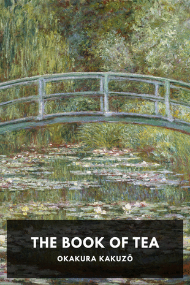
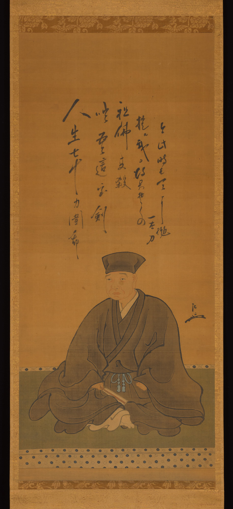
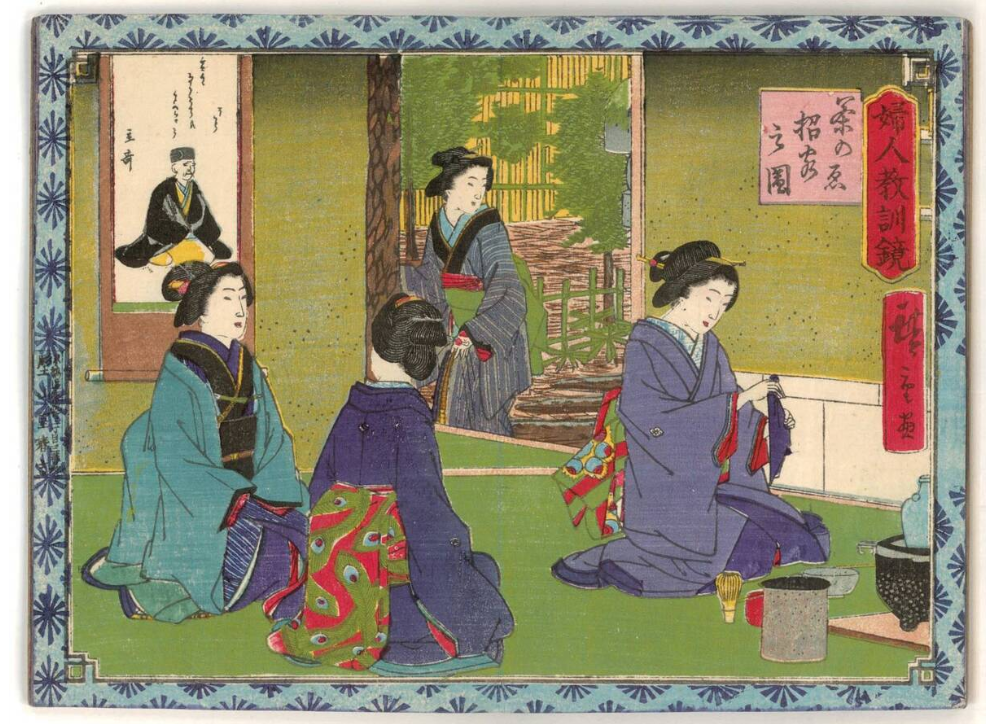
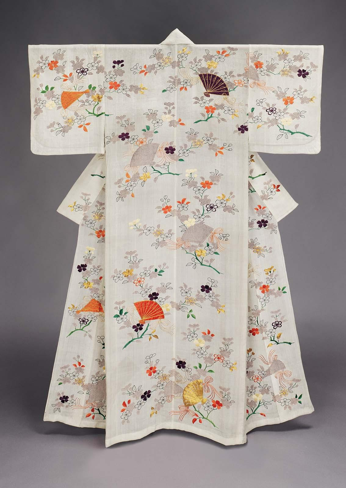
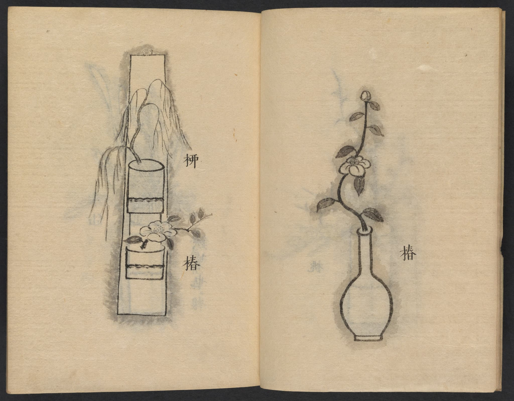
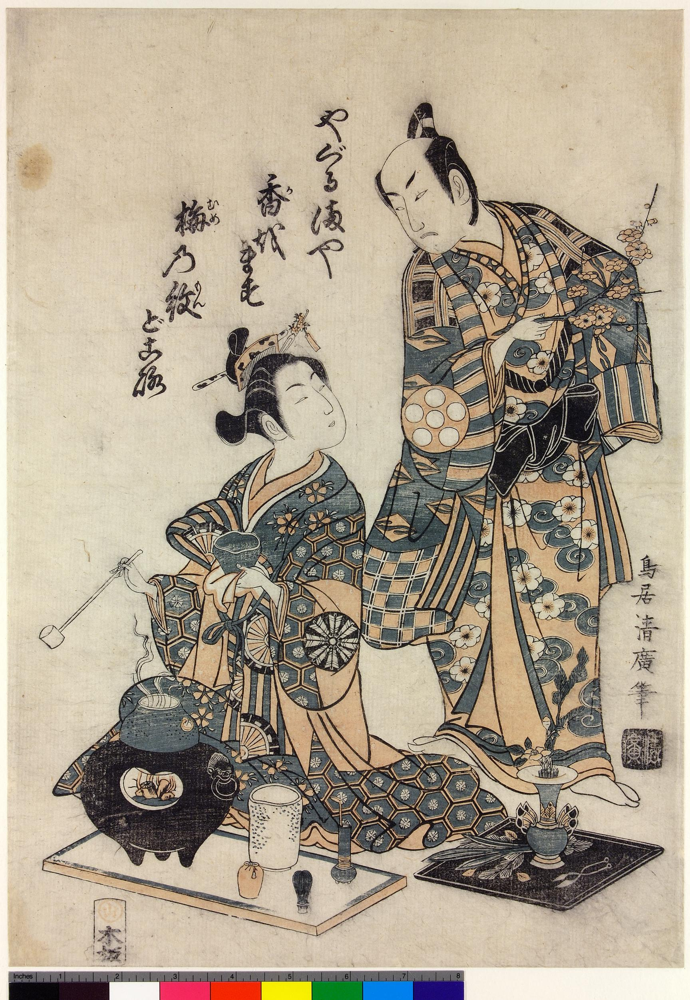
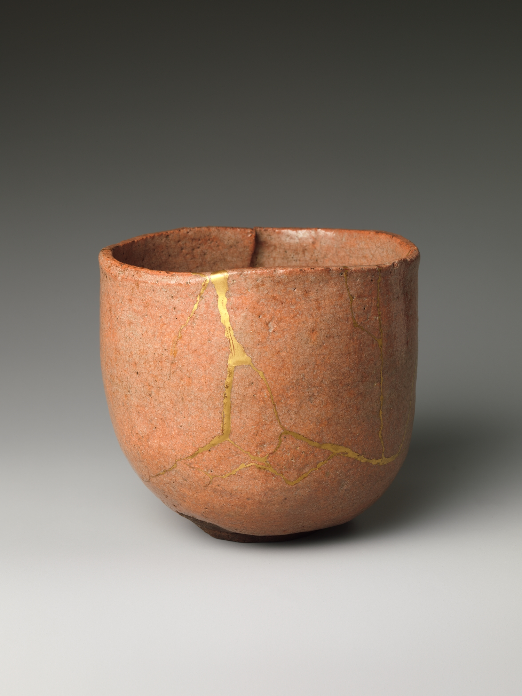
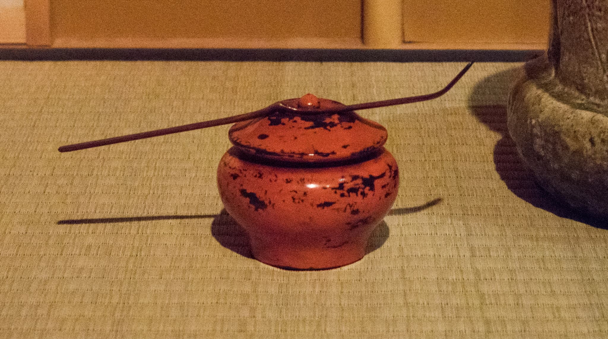
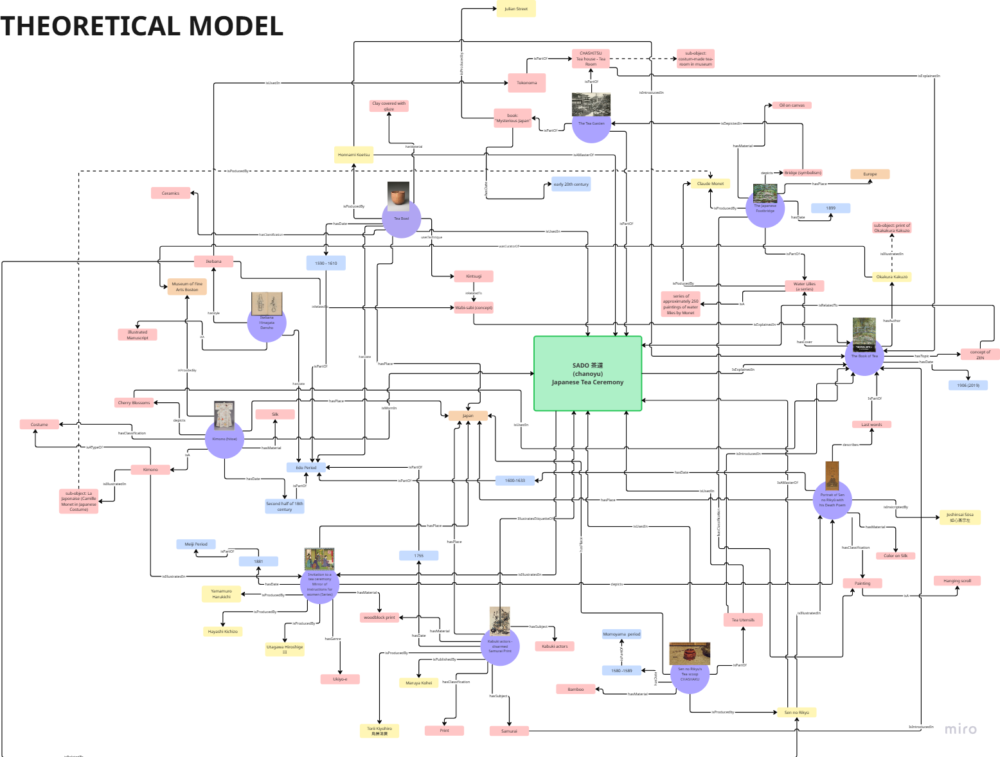
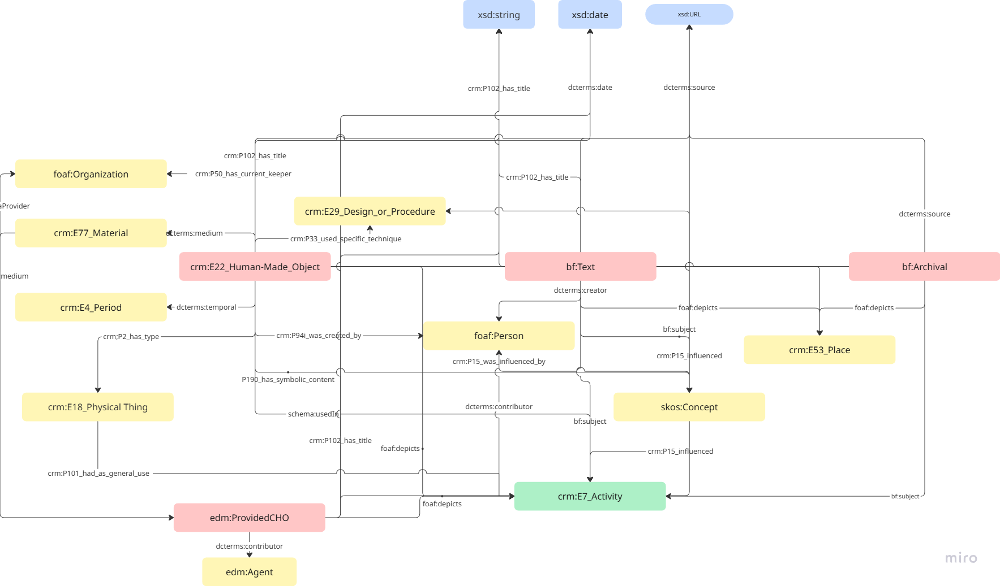

a LOD of TEA Project
Tea is...
Our Project
This project explores how digital technologies such as Linked Open Data and metadata modeling can be used to preserve and interpret cultural knowledge.
Our focus is the Japanese Tea Ceremony (茶道 / sadō / chanoyu) — a centuries-old tradition that embodies harmony, respect, purity, and tranquility.
This is a linked open data project that aims to create a comprehensive representation.
The Japanese Tea Ceremony (茶道 / sadō / chanoyu)
The Japanese Tea Ceremony (茶道 / sadō/ chanoyu) is a traditional cultural practice that embodies the spirit of harmony, respect, purity, and tranquility. Rooted in centuries of refinement, this ritual is more than the act of drinking tea — it is a philosophical and aesthetic experience shaped by Zen Buddhism.
Influenced deeply by the teachings of Sen no Rikyū, one of the most iconic tea masters of the 16th century, the ceremony emphasizes simplicity and the subtle beauty found in imperfection, a concept known as wabi-sabi. Every element of the practice — from the utensils to the setting — reflects this aesthetic.
Western audiences were first introduced to these ideas through The Book of Tea, a 1906 essay by Okakura Kakuzō, which presents the tea ceremony as a bridge between art, nature, and spiritual reflection. Through this project, we aim to connect the heritage of the Tea Ceremony with the digital age, using Linked Open Data to trace its cultural, historical, and philosophical dimensions.
Items
This selection of cultural heritage items explores the world of the Japanese Tea Ceremony, from a tea bowl used in ritual practice to a portrait of Sen no Rikyū and the influential Book of Tea. Each object reveals a different aspect of sadō’s philosophy, aesthetics, and history.

{kind=link}

{kind=link}

{kind=link}

{kind=link}

{kind=link}

{kind=link}

{kind=link}

{kind=link}

{kind=link}
Knowledge Organization
Starting from the basic metadata and descriptive information, we developed a Theoretical Model using natural language to highlight each object's connection to the theme of sadō and its relationships to other items in the collection.
Building on this, the Conceptual Model abstracts the objects further—representing them through URIs and defining their relationships using ontology-based schemas. Details can be viewed on the dedicated page by clicking below.

Each item is interpreted through narrative connections to sadō, revealing cultural meanings and interrelations in context.

Objects are represented as linked data using ontologies, enabling structured exploration across entities.

Provident nihil minus qui consequatur non omnis maiores. Eos accusantium minus dolores iure perferendis tempore et consequatur.
Knowledge Representation
We finally explored how knowledge about each cultural heritage object can be formally structured. We translated item descriptions into triple statements using established ontologies. By mapping cultural meanings and relationships into triples, we aimed to make implicit connections.
The representation follows semantic web principles, allowing each entity—whether a person, place, object, or concept—to be identified with a URI and linked meaningfully to others.